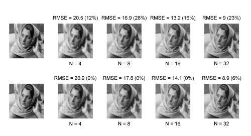

Bayesian orthogonal component analysis for sparse representation
We address the problem of identifying a
lower dimensional space where observed data can be sparsely
represented. This undercomplete dictionary learning task can
be formulated as a blind separation problem of sparse sources
linearly mixed with an unknown orthogonal mixing matrix. This
issue is formulated in a Bayesian framework.
Fig. 1. Actual sources (circles, red) and corresponding MAP estimates (stars, blue).
Application to natural image processing
An application to sparse coding on undercomplete dictionary is proposed. A fraction of the well-known Barbara natural
image is analyzed by BOCA. This 256x256-pixel image, depicted
in Fig. 2 (column 1), is decomposed into T = 16x16 block
patches of size 16x16 pixels. The proposed Bayesian strategy and the K-SVD algorithm are applied on these observations
for different values of the number of sources (i.e., different
numbers of dictionary atoms). The images reconstructed
by the algorithms after estimating the source and mixing matrices
are depicted in Fig. 2 (columns 2 to 5) for different values
of ranging N from N=4 to N=3.

Fig. 2. Sparse coding of the Barbara image obtained by BOCA (first row) and K-SVD (second row) with different values of N. Corresponding RMSEs and
sparsity levels (expressed as percentage) are indicated above each image.
The MAP estimate of the
dictionary atoms (i.e., the mixing matrix), formatted as block
patches of size 16x16, are represented in Fig. 3 (left) for the
corresponding values of the number of sources. As an illustration,
the dictionary atoms estimated by K-SVD have been also
depicted in Fig. 3 (right).
Fig. 3. Estimated dictionary atoms by BOCA (left) and K-SVD (right) for
different values of the number of dictionary atoms N.
The BOCA algorithm and the main results are detailed in a paper published in IEEE Trans. Signal Processing in 2010.
- article
 [ .pdf - 1.4Mo ].
[ .pdf - 1.4Mo ].
The corresponding Matlab codes are available below.
- matlab codes
 [ .zip - 6Ko ].
[ .zip - 6Ko ].